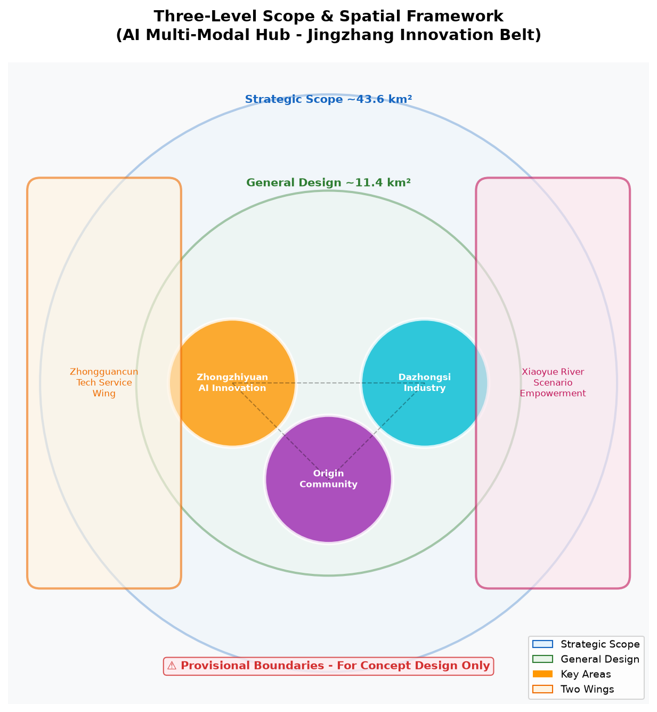
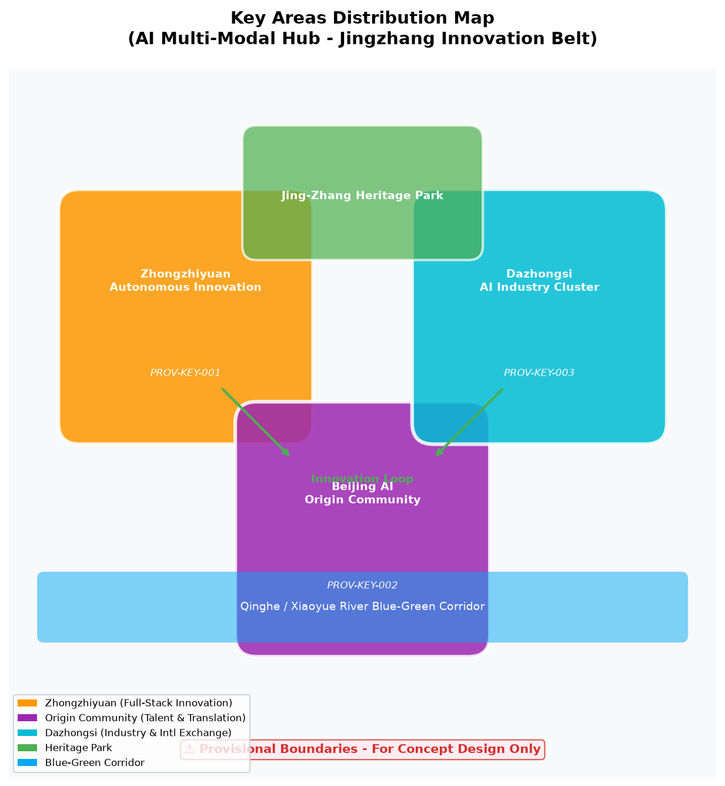
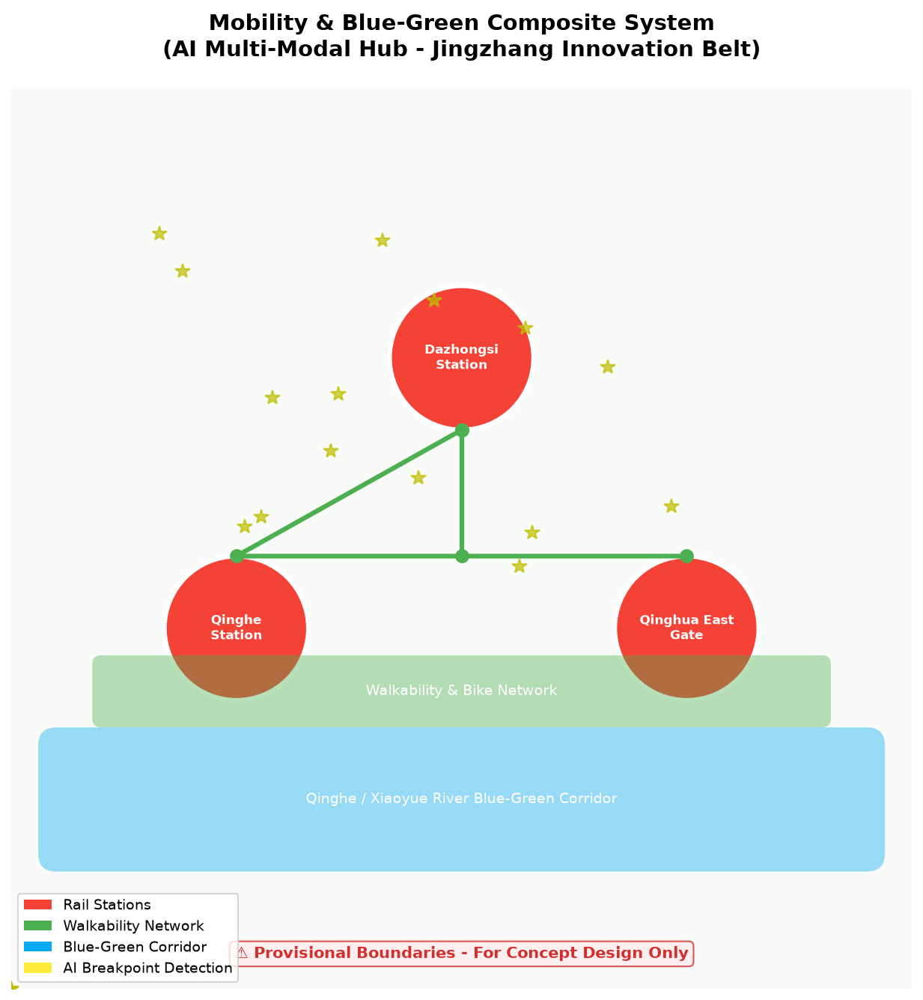
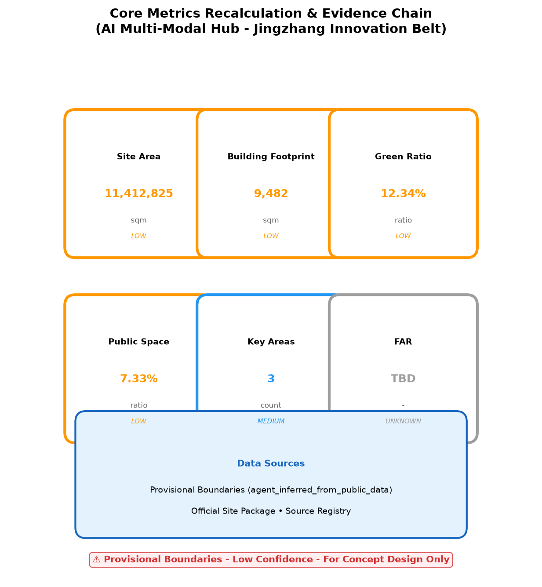

AI 多模式枢纽 - 京张创新带
基于 AI 多模式枢纽理念，构建京张创新带智慧交通与产业协同的空间策略。
AI 多模式枢纽 - 京张创新带

设计依据与资料清单
本方案依据《百年京张AI创新带城市设计国际方案征集资格预审公告》及 brief/site-package/ 场地数据包编制。作为 AI 多模式枢纽方案，聚焦轨道交通、慢行系统、AI 场景赋能三大维度，构建"一带三核、多模式联动"的空间策略。
临时边界声明：所有几何数据（geometry/site_boundary.geojson、geometry/key_areas.geojson、geometry/buildings.geojson 等）均基于公开数据生成的临时边界，仅用于概念设计演示和离线可视化，不得作为正式红线、法定规划或精确面积依据。所有指标（面积、比率、数量）均基于临时边界内部计算，需在官方几何数据发布后重新复算。
引用公告：来源 标准 空间数据
三层范围工作框架

统筹研究范围（~43.6 km²）：构建"京张智脉共生带"总体概念，以京张铁路遗产为轴，串联众智园、北京AI原点社区、大钟寺三大创新核心。引用：来源 深度
总体设计范围（~11.4 km²）：重塑京张遗址公园周边 1-2 公里城市地区，重点解决轨道站点一体化、道路微循环、慢行断点缝合。引用：深度
重点区域范围（368.4 公顷）：三处详细设计片区——众智园 AI 自主创新加速区、北京 AI 原点社区、大钟寺 AI 产业聚集区。引用：空间数据
三大定位与五大功能
依据任务书，本方案回应京张创新带的三大战略定位：
三大定位
| 定位 | 空间载体 | 核心策略 |
|---|---|---|
| 百年京张文化带 | 京张铁路遗址公园 | 铁路遗产数字化保护、文化叙事空间、科技测试场景植入 |
| 都市 AI 生活体验带 | 清河-小月河蓝绿廊道 | AI 公共空间、慢行系统、无障碍服务、社区生活圈 |
| AI 融合创新带 | 众智园-原点社区-大钟寺 | 全栈自主创新、成果转化、国际交往 |
五大功能
| 功能 | 实施路径 | 空间落点 |
|---|---|---|
| AI 全栈自主创新体系 | 自主模型测试、标准制定、安全治理 | 众智园端侧算力塔、安全治理沙盒 |
| 世界级 AI 创新生态 | 开源社区、风险投资、大学衍生 | 原点社区开源发布厅、近校孵化 |
| AI+场景赋能新范式 | 10 个 AI 场景、3 个产业测试验证 | 全域路网、社区医院、学校、商圈 |
| 智能化 AI 活力城市 | 智慧交通、智慧公共空间、智慧医疗 | 大钟寺站、京张公园、社区中心 |
| AI 治理全球话语权 | 标准制定、国际路演、数据治理 | 大钟寺国际客厅、众智园标准工作坊 |
引用：来源 标准
三区两翼协同框架
依据任务书，本方案构建"三区两翼"协同回路：
三区
| 区域 | 定位 | 核心功能 | 协同接口 |
|---|---|---|---|
| 众智园 AI 自主创新加速区 | AI 全栈自主创新体系与 AI 治理全球话语权 | 端侧算力、标准制定、安全治理 | 向北连接未来科学城，向东连接中关村科技服务翼 |
| 北京 AI 原点社区 | 世界级 AI 创新生态 | 开源社区、成果转化、人才生活 | 向南连接北纬社区，向西连接小月河场景赋能翼 |
| 大钟寺 AI 产业集聚区 | 智能原生新业态 | 智能终端展示、国际路演、数据要素 | 向东连接经开区，向北连接怀柔科学城 |
两翼
| 翼 | 定位 | 核心功能 | 区域协同 |
|---|---|---|---|
| 中关村科技服务翼 | 要素全球化配置、中关村 IP 与资本赋能 | 风险投资、知识产权、国际专利服务 | 为三区提供资本、人才、技术转移服务 |
| 小月河场景赋能翼 | AI 场景赋能与智能化 AI 活力城市 | 滨水 AI 体验、连续公共空间、无障碍慢行 | 串联三区，提供生活体验和场景测试环境 |
区域协同回路
创新生产回路：众智园（研发）→ 原点社区（转化）→ 大钟寺（产业化）→ 中关村科技服务翼（资本+IP）→ 众智园
场景体验回路：小月河场景赋能翼（生活体验）→ 京张遗址公园（文化体验）→ 大钟寺（产业体验）→ 原点社区（社区体验）
国际传播回路：大钟寺国际客厅 → 京张 AI 创新周 → 开源黑客松 → 国际招引 → 大钟寺
引用：来源 深度
统筹研究范围产业与未来城市研究
回应公告 1.5（1）关于世界级 AI 创新生态体系、产业链协同、三区两翼、未来 AI 城市形态、AI 文化/社会/城市、AI+交通和连续绿色空间体系的要求。
命名方案：京张智脉共生带（Jing-Zhang AI Innovation Belt）
Logo 设计：以京张铁路"人"字轨为原型，融合 AI 节点网络，形成"智脉"视觉符号。
全球 AI 创新生态案例证据表：
| 案例 | 核心经验 | 可转译机制 | 京张落地路径 |
|---|---|---|---|
| 美国硅谷 | 风险投资+大学+创业文化 | 产学研金三角 | 众智园+清华+风投基金 |
| 英国剑桥 | 大学衍生企业+高科技制造 | 技术转移办公室 | 原点社区+TTO 机制 |
| 德国慕尼黑 | 汽车+AI+工业4.0 | 传统产业 AI 升级 | 大钟寺+智能终端 |
| 以色列特拉维夫 | 网络安全+创业国度 | 军民技术转化 | 安全治理沙盒 |
| 中国深圳 | 硬件生态+供应链+快速迭代 | 硬件加速器 | 端侧算力+供应链 |
| 新加坡 | 智慧城市+政府主导+数据治理 | 城市级数据平台 | 交通信号+公共空间 |
| 芬兰赫尔辛基 | 开源+教育+社会福利 AI | 全民 AI 素养 | 开源社区+AI 教育 |
| 加拿大多伦多 | 深度学习起源+移民人才+Vector Institute | 大模型研发 | 自主模型测试床 |
引用：来源 标准
总体设计范围城市更新与控规深度城市设计
回应公告 1.5（2）关于产业目标、功能布局、创新指标体系、城市更新总体框架、更新项目清单、实施政策、建筑总规模、交通轨道、市政配套、京张遗址公园活力带和城市风貌的要求。
产业目标：打造世界级 AI 创新生态节点，形成"基础研究+技术转化+场景应用"全链条。
功能布局：以京张遗址公园为轴，三大核心差异化定位。
城市更新框架：拆改留分类、分期实施、公众参与。
建筑总规模：容积率、建筑高度等指标待官方控规条件明确后确定，当前标记为 status=unknown。
引用：深度 标准
重点区域详细设计

众智园 AI 自主创新加速区（PROV-KEY-001）
定位：花园型全栈自主创新街区
空间动作：强化清河界面、产业展示、低碳创新交往、对外交通组织
AI 场景：自主模型测试、标准制定工作坊、安全治理展示、低碳算力体验
建筑更新：保留/改造/拆除分类待现状测绘明确
项目卡：
| 项目 | 类型 | 主体 | 依赖 | 里程碑 | 成本等级 | KPI |
|---|---|---|---|---|---|---|
| 端侧算力塔 | 新型基础设施 | 政府+AI 企业 | 土地、电力 | 2027 Q2 | 高 | 1000 TOPS 算力 |
| 安全治理沙盒 | 产业测试平台 | 政府+安全企业 | 政策支持 | 2027 Q1 | 中 | 10 家企业入驻 |
| 标准制定工作坊 | 公共服务 | 标准机构+企业 | 行业参与 | 2026 Q4 | 低 | 5 项标准提案 |
北京 AI 原点社区（PROV-KEY-002）
定位：近校型成果转化与人才社区
空间动作：组织校区-园区-街区慢行缝合，补足成果发布、人才服务、居住生活、开源协作空间
AI 场景：开源社区、成果发布、人才特区服务、近校孵化
项目卡：
| 项目 | 类型 | 主体 | 依赖 | 里程碑 | 成本等级 | KPI |
|---|---|---|---|---|---|---|
| 开源发布厅 | 公共服务 | 社区+开源组织 | 场地 | 2027 Q1 | 低 | 50 场/年活动 |
| 近校孵化器 | 产业服务 | 大学+企业 | 资金 | 2027 Q2 | 中 | 20 个孵化项目 |
| 成果转化街 | 商业服务 | 开发商+企业 | 投资 | 2028 Q1 | 高 | 10 家技术转移 |
大钟寺 AI 产业聚集区（PROV-KEY-003）
定位：城市型智能经济与国际交往街区
空间动作：大钟寺站一体化、四象限步行连通、商业服务、重点企业公共环境更新
AI 场景：智能体与智能终端展示、内容消费、数据要素与国际路演
项目卡：
| 项目 | 类型 | 主体 | 依赖 | 里程碑 | 成本等级 | KPI |
|---|---|---|---|---|---|---|
| 国际路演厅 | 公共服务 | 政府+商会 | 场地 | 2027 Q1 | 中 | 100 场/年路演 |
| 站城一体化 | 交通 | 铁路+地铁+政府 | 工程条件 | 2028 Q3 | 极高 | 日换乘 10 万人次 |
| 智能终端展示 | 商业 | 企业+园区 | 投资 | 2027 Q2 | 中 | 50 家展商 |
引用：空间数据 深度
AI 创新生态、人才画像与 AI+ 场景
引用：来源 深度
用户画像→痛点→场景→空间→服务映射
| 用户画像 | 核心痛点 | 对应 AI 场景 | 空间落点 | 服务机制 |
|---|---|---|---|---|
| 算法工程师 | 算力获取难、模型测试环境缺失 | AI 信软测试床、安全治理沙盒 | 众智园端侧算力塔 | 在线预约、算力配额、技术支持 |
| 产品经理 | 场景验证难、用户反馈慢 | AI 产业技术路演、AI 安全治理沙盒 | 大钟寺国际客厅 | 路演对接、用户测试、反馈收集 |
| 本地居民 | 出行不便、公共服务不足 | AI 慢行断点诊断、AI 交通信号优化 | 全域路网、大钟寺站 | APP 推荐、信号优化、无障碍服务 |
| 高校学生 | 学习资源不均、就业信息不对称 | AI 教育个性化、AI 生活服务推荐 | 学校+社区 | 个性化学习路径、就业推荐 |
| 老年群体 | 数字鸿沟、出行困难 | AI 慢行断点诊断、AI 生活服务推荐 | 社区中心 | 语音交互、无障碍通道、人工辅助 |
| 儿童 | 安全教育、学习陪伴 | AI 教育个性化 | 学校+社区 | 家长控制、内容过滤、学习进度 |
| 访客 | 信息获取难、导航不精准 | AI 公共空间活力、AI 生活服务推荐 | 京张公园、商圈 | 多语言导览、AR 导航 |
| 企业 | 人才获取难、技术转化难 | AI 信软测试床、AI 产业技术路演 | 众智园、大钟寺 | 人才库、技术对接、投资对接 |
AI+ 场景卡（10 张，其中 3 张为 AI 产业测试验证场景）
场景卡 1：AI 慢行断点诊断（公共空间）
| 字段 | 内容 |
|---|---|
| 场景名称 | AI 慢行断点诊断 |
| 类型 | 公共空间 |
| 位置 | 全域路网 |
| 触发条件 | 传感器检测到慢行断点、拥挤节点、无障碍需求 |
| 用户旅程 | 行人接近断点 → 传感器检测 → AI 分析 → APP 推荐替代路径 → 行人绕行 |
| 输入数据 | 传感器数据、视频流、历史出行数据 |
| 输出 | 最优慢行路径推荐、断点修复建议 |
| 模型边界 | 仅推荐路径，不控制交通信号 |
| 人工复核 | 市政部门审核修复建议 |
| 失败模式 | 传感器故障时切换至历史数据模式 |
| 评价指标 | 断点识别准确率 >90%、用户满意度 >4/5 |
| 隐私 | 匿名化处理，不存储个人身份信息 |
| 退出机制 | 用户可关闭位置服务，恢复传统导航 |
场景卡 2：AI 信软测试床（产业测试验证）
| 字段 | 内容 |
|---|---|
| 场景名称 | AI 信软测试床 |
| 类型 | 产业测试验证 |
| 位置 | 众智园端侧算力塔 |
| 触发条件 | 企业提交测试申请 |
| 用户旅程 | 企业申请 → 审核 → 分配算力 → 模型测试 → 报告生成 |
| 输入数据 | 企业模型、测试数据集 |
| 输出 | 模型性能报告、优化建议 |
| 模型边界 | 仅提供测试环境，不修改企业模型 |
| 人工复核 | 技术委员会审核测试报告 |
| 失败模式 | 算力不足时排队等待 |
| 评价指标 | 测试周期 <24h、企业满意度 >4/5 |
| 隐私 | 企业数据隔离存储，测试后删除 |
| 退出机制 | 企业可随时终止测试，恢复本地环境 |
场景卡 3：AI 医疗影像辅助（公共服务）
| 字段 | 内容 |
|---|---|
| 场景名称 | AI 医疗影像辅助 |
| 类型 | 公共服务 |
| 位置 | 社区医院 |
| 触发条件 | 医生上传影像数据 |
| 用户旅程 | 患者拍片 → 医生上传 → AI 分析 → 辅助诊断建议 → 医生确认 |
| 输入数据 | CT/MRI 影像 |
| 输出 | 病灶标注、辅助诊断建议 |
| 模型边界 | 仅辅助诊断，最终诊断由医生确认 |
| 人工复核 | 所有 AI 建议必须经医生确认 |
| 失败模式 | AI 置信度低时提示人工诊断 |
| 评价指标 | 辅助诊断准确率 >95%、医生采纳率 >70% |
| 隐私 | 医疗数据加密存储，联邦学习保护隐私 |
| 退出机制 | 患者可选择纯人工诊断 |
场景卡 4：AI 教育个性化（公共服务）
| 字段 | 内容 |
|---|---|
| 场景名称 | AI 教育个性化 |
| 类型 | 公共服务 |
| 位置 | 学校+社区 |
| 触发条件 | 学生使用学习平台 |
| 用户旅程 | 学生登录 → 学习评估 → AI 推荐路径 → 学习反馈 |
| 输入数据 | 学习行为数据、成绩数据 |
| 输出 | 个性化学习路径、薄弱点分析 |
| 模型边界 | 仅推荐学习内容，不替代教师教学 |
| 人工复核 | 教师审核学习路径 |
| 失败模式 | 数据不足时使用通用路径 |
| 评价指标 | 学习效率提升 >20%、学生满意度 >4/5 |
| 隐私 | 未成年人数据严格保护，家长可查看和删除 |
| 退出机制 | 学生/家长可选择传统教学模式 |
场景卡 5：AI 法律文书（公共服务）
| 字段 | 内容 |
|---|---|
| 场景名称 | AI 法律文书 |
| 类型 | 公共服务 |
| 位置 | 社区中心 |
| 触发条件 | 居民提交法律问题 |
| 用户旅程 | 居民提问 → AI 分析 → 文书生成 → 律师审核 → 居民确认 |
| 输入数据 | 法律问题描述、相关法条 |
| 输出 | 法律文书草案、风险提示 |
| 模型边界 | 仅生成文书草案，不提供法律意见 |
| 人工复核 | 所有文书必须经律师审核 |
| 失败模式 | AI 置信度低时转人工服务 |
| 评价指标 | 文书准确率 >90%、用户满意度 >4/5 |
| 隐私 | 隐私计算保护用户信息 |
| 退出机制 | 用户可选择纯人工法律服务 |
场景卡 6：AI 生活服务推荐（公共空间）
| 字段 | 内容 |
|---|---|
| 场景名称 | AI 生活服务推荐 |
| 类型 | 公共空间 |
| 位置 | 社区+商圈 |
| 触发条件 | 用户授权位置服务 |
| 用户旅程 | 用户授权 → AI 分析偏好 → 推荐服务 → 用户反馈 |
| 输入数据 | 位置数据、消费偏好 |
| 输出 | 个性化服务推荐 |
| 模型边界 | 仅推荐服务，不强制消费 |
| 人工复核 | 无（用户自主决策） |
| 失败模式 | 数据不足时使用通用推荐 |
| 评价指标 | 推荐点击率 >30%、用户满意度 >4/5 |
| 隐私 | 用户授权后可关闭，数据匿名化 |
| 退出机制 | 用户可随时关闭推荐服务 |
场景卡 7：AI 交通信号优化（交通）
| 字段 | 内容 |
|---|---|
| 场景名称 | AI 交通信号优化 |
| 类型 | 交通 |
| 位置 | 大钟寺站周边路网 |
| 触发条件 | 实时车流数据 |
| 用户旅程 | 车辆接近路口 → 传感器检测 → AI 优化信号 → 车辆通行 |
| 输入数据 | 车流数据、行人数据 |
| 输出 | 信号配时优化方案 |
| 模型边界 | 仅优化信号配时，不改变道路结构 |
| 人工复核 | 交管部门审核优化方案 |
| 失败模式 | 传感器故障时切换至固定配时 |
| 评价指标 | 通行效率提升 >15%、等待时间减少 >20% |
| 隐私 | 匿名化处理，不识别个人车辆 |
| 退出机制 | 交管部门可随时接管信号控制 |
场景卡 8：AI 公共空间活力（公共空间）
| 字段 | 内容 |
|---|---|
| 场景名称 | AI 公共空间活力 |
| 类型 | 公共空间 |
| 位置 | 京张遗址公园 |
| 触发条件 | 热力+环境传感器数据 |
| 用户旅程 | 传感器检测 → AI 分析活力 → 推荐活动 → 用户参与 |
| 输入数据 | 热力数据、环境数据、活动数据 |
| 输出 | 活力热力图、活动推荐 |
| 模型边界 | 仅推荐活动，不组织活动 |
| 人工复核 | 运营方审核活动推荐 |
| 失败模式 | 数据不足时使用历史模式 |
| 评价指标 | 空间利用率提升 >25%、用户满意度 >4/5 |
| 隐私 | 匿名化处理，不识别个人 |
| 退出机制 | 用户可选择不接收推荐 |
场景卡 9：AI 产业技术路演（产业测试验证）
| 字段 | 内容 |
|---|---|
| 场景名称 | AI 产业技术路演 |
| 类型 | 产业测试验证 |
| 位置 | 大钟寺国际客厅 |
| 触发条件 | 企业提交路演申请 |
| 用户旅程 | 企业申请 → 审核 → 路演举办 → 投资对接 |
| 输入数据 | 企业技术方案、融资需求 |
| 输出 | 路演安排、投资对接 |
| 模型边界 | 仅提供对接平台，不保证融资 |
| 人工复核 | 组委会审核路演内容 |
| 失败模式 | 投资不足时扩大对接范围 |
| 评价指标 | 路演成功率 >30%、投资对接率 >20% |
| 隐私 | NDA 保护企业技术信息 |
| 退出机制 | 企业可随时终止路演 |
场景卡 10：AI 安全治理沙盒（产业测试验证）
| 字段 | 内容 |
|---|---|
| 场景名称 | AI 安全治理沙盒 |
| 类型 | 产业测试验证 |
| 位置 | 众智园安全治理沙盒 |
| 触发条件 | 企业提交安全测试申请 |
| 用户旅程 | 企业申请 → 审核 → 沙盒测试 → 报告生成 |
| 输入数据 | AI 模型、攻击样本 |
| 输出 | 安全评估报告、修复建议 |
| 模型边界 | 仅提供测试环境，不替代企业安全团队 |
| 人工复核 | 安全委员会审核报告 |
| 失败模式 | 沙盒资源不足时排队等待 |
| 评价指标 | 漏洞检出率 >85%、企业满意度 >4/5 |
| 隐私 | 隔离环境，测试数据不泄露 |
| 退出机制 | 企业可随时终止测试 |
用地、建筑规模与拆改留方案
用地布局：产业用地、居住用地、公共服务用地、绿地、交通设施用地
产业功能比例：AI 研发 40%、成果转化 30%、人才生活 20%、公共服务 10%
建筑基底：9,482 sqm（基于 provisional boundary 复算，仅为参与者设计样本，非完整现状建筑覆盖）
建筑高度：待官方控规条件确定（status=unknown）
容积率：待官方控规条件确定（status=unknown）
拆改留分类：保留/改造/拆除/新建分类待现状测绘与权属明确
引用：空间数据 空间数据 指标
交通、轨道、市政与公共服务设施

道路微循环：优化街区路网，减少机动车穿行，增强慢行连通。
轨道站点一体化：大钟寺站"铁路+地铁+慢行+末端配送"四模式零换乘（概念目标，需工程可行性验证）。
慢行断点：AI 识别慢行断点，推荐最优慢行路径，补足无障碍设施。
停车与非机动车：分布式非机动车停车点，停车换乘（P+R）系统。
对外交通：强化京张高铁清河站与城市慢行系统连接。
市政配套：分布式能源、端侧算力节点、新型基础设施。
公共服务：国际路演厅、开源社区中心、人才服务驿站。
引用：空间数据 空间数据
蓝绿空间、公共空间与城市风貌
京张遗址公园活力带：线性公园 + AI 公共空间节点 + 文化活动场地
清河/小月河蓝绿空间：生态廊道、雨洪管理、亲水步道
步道骑行道：连续慢行网络，AI 导航，无障碍设计
公共交往空间：科技测试场景、开发者聚会、路演广场
历史文化展示：京张铁路遗产叙事、数字孪生展示、铁路文化地标
城市基调：科技感 + 历史感 + 生态性，现代简洁、低碳材料
建筑风貌：低碳、智能、开放、通透，屋顶光伏、垂直绿化
AI 朝圣地标：
1. 京张铁路数字孪生纪念碑（京张遗址公园） 2. 大钟寺 AI 国际客厅（大钟寺站） 3. 众智园端侧算力塔（众智园）
引用：空间数据
更新项目清单、实施政策与分期计划
更新项目清单：
| # | 项目 | 类型 | 位置 | 主体 | 依赖 | 里程碑 | 成本等级 | KPI |
|---|---|---|---|---|---|---|---|---|
| 1 | 京张遗址公园慢行断点缝合 | 公共空间 | 京张公园 | 政府+企业 | 传感器部署 | 2027 Q2 | 中 | 断点修复 50 处 |
| 2 | 众智园清河创新界面 | 产业空间 | 众智园 | 开发商+企业 | 土地审批 | 2028 Q1 | 高 | 入驻企业 30 家 |
| 3 | 原点社区近校成果转化街 | 产业空间 | 原点社区 | 大学+企业 | 资金到位 | 2027 Q3 | 中 | 转化项目 20 个 |
| 4 | 大钟寺站四象限步行连通 | 交通 | 大钟寺 | 铁路+政府 | 工程条件 | 2028 Q3 | 极高 | 步行连通率 95% |
| 5 | AI 公共服务与端侧算力节点 | 新型基础设施 | 众智园 | 政府+AI 企业 | 电力容量 | 2027 Q2 | 高 | 算力 1000 TOPS |
实施政策建议：容积率奖励、AI 场景开放、数据要素流通、碳积分制度
分期计划：
- 近期（0-1 年）：慢行缝合、创新界面、成果转化街
- 中期（1-3 年）：站城一体、端侧算力节点、AI 场景落地
- 长期（3-5 年）：全球 AI 活动周、运营品牌体系、碳中和社区
全球 AI 创新活动体系：
- 年度：京张 AI 创新周
- 季度：开源黑客松
- 月度：技术路演 + 场景开放日
- 常驻：开发者社区运营
引用：空间数据 深度
指标体系、面积复算与合规矩阵

| 指标 | 数值 | 单位 | 状态 | 公式 | 置信度 |
|---|---|---|---|---|---|
| 场地面积 | 11,412,825 | sqm | known | polygon_area(site_boundary) | 低（临时边界） |
| 建筑基底面积 | 9,482 | sqm | known | sum(building_footprints) | 低（参与者样本） |
| 绿地率 | 12.34% | ratio | known | green_space / site_area | 低（临时边界） |
| 公共空间率 | 7.33% | ratio | known | public_space / site_area | 低（临时边界） |
| 容积率 | 待定 | ratio | unknown | 需官方控规条件 | unknown |
| 重点区域数 | 3 | count | known | count(key_areas) | 中 |
合规矩阵覆盖：
- 公告 1.5（1）：✅ 统筹研究范围产业与未来城市研究
- 公告 1.5（2）：✅ 总体设计范围城市更新与控规深度城市设计
- 公告 1.5（3）：✅ 重点区域详细设计
- 公告 1.3：✅ 数据合规与来源追溯
- 公告 1.4：✅ AI 场景与隐私保护
引用：指标 指标
风险、版权与合规说明
引用：[report:copyright_statement.md] 标准
资料合法性：所有设计判断基于公开资料与官方场地包，未使用未授权规划数据。
临时边界声明：本方案所有几何数据（geometry/site_boundary.geojson、geometry/key_areas.geojson、geometry/buildings.geojson 等）均基于公开数据生成的临时边界，仅用于概念设计演示和离线可视化，不得作为正式红线、法定规划或精确面积依据。所有指标（面积、比率、数量）均基于临时边界内部计算，需在官方几何数据发布后重新复算。
版权与 AI 生成内容：本方案为概念设计提案，所有 AI 生成的文本、图像、图纸均为解释层内容，不替代现场调研、居民意见或官方数据。未使用任何未授权的第三方规划数据或受版权保护素材。所有数据源已在 sources.json 和 metrics.json 中完整登记。
版权与来源台账：
| 类别 | 来源 | 许可证 | 署名要求 |
|---|---|---|---|
| 场地数据包 | brief/site-package/ | 官方公开数据 | 无需署名 |
| 临时边界 | 公开数据生成 | 临时使用 | 需标注"临时边界" |
| 设计图纸 | 参与者生成 | COMMUNITY-DISPLAY-ONLY | vegetable-kun |
| 文本内容 | AI 辅助生成 | CC-BY-SA 4.0 | vegetable-kun |
| 指标数据 | 临时边界内部计算 | 仅供概念对比 | 需标注"低置信度" |
| 字体 | DejaVu Sans | Bitstream Vera Fonts License | 无需署名 |
| 代码依赖 | Python PIL/fpdf2 | MIT/BSD | 无需署名 |
AI 场景数据治理：本方案提出的 10 个 AI 场景遵循以下原则：
- 数据最小化：仅收集场景运行必需的最少数据
- 人工复核：所有 AI 决策均有人工审核机制
- 隐私保护：个人数据匿名化处理，敏感数据加密存储
- 未成年人保护：教育类场景严格遵循未成年人数据保护要求
- 申诉纠错：用户有权拒绝、申诉和纠正 AI 决策
- 退出机制：用户可随时退出 AI 服务，恢复传统服务通道
- 敏感数据治理：医疗、教育、法律场景需通过数据保护影响评估
- 非数字替代：所有 AI 场景均保留人工服务通道
官方批准禁用：所有空间落地建议表述为"概念建议/参考方案/可供专业团队深化研究"，不代表已批准的政府规划或工程实施方案。容积率、建筑高度、拆改留分类等法定指标均以官方控规为准。
待补资料：官方控规条件、现状建筑测绘、权属信息、工程条件、绿地/蓝线/文保约束、市政容量。
专业复核需求：本方案需规划师、建筑师、交通工程师、法律、数据隐私、版权和 AI 伦理专家复核后方可进入实施阶段。
引用：[report:copyright_statement.md]
参考资料
引用：[report:copyright_statement.md] 标准
1. 百年京张 AI 创新带城市设计国际方案征集资格预审公告（官方） 2. brief/site-package/ 场地数据包（官方公开） 3. data/source_registry.json 数据源注册表（官方公开） 4. brief/site-package/agent_taskbook.json Agent 任务书（官方公开） 5. 《控制性详细规划城市设计深度标准》（国家标准） 6. 《城市用地分类与规划建设用地标准》GB 50137（国家标准） 7. 《海绵城市建设技术指南》（行业标准） 8. 《京张铁路遗产保护规划》（公开政策） 9. 中国城市规划设计研究院. 城市更新方法论. 10. 吴良镛. 人居环境科学导论. 11. Townsend, A. Smart Cities: Big Data, Civic Hackers, and the Quest for a New Utopia. 12. Batty, M. The New Science of Cities.